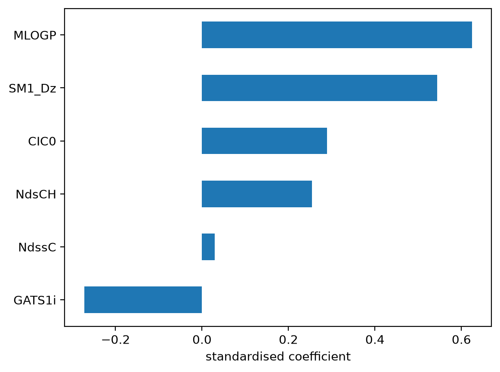

<section id="coefs" style="background:#FFFFFF;color:#2D3340;font-family:'Source Sans 3', Arial, sans-serif;padding:96px 128px;display:flex;flex-direction:row;align-items:center;gap:64px">

<div style="flex:1;display:flex;flex-direction:column;gap:32px">
<h2 style="font-family:'Source Sans 3', Arial, sans-serif;font-weight:700;line-height:1.1;color:#002060;font-size:44px">All six descriptors: R² 0.26 → 0.44</h2>
<p style="font-size:32px;line-height:1.4">Standardised coefficients: MLOGP and SM1_Dz raise predicted toxicity, GATS1i lowers it.</p>
</div>
<aside>Exercise 4.1: LinearRegression on all six, test RMSE 1.045, R² 0.442. Standardised coefficient = change in LC50 per standard deviation. With correlated descriptors coefficients share the credit: do not over-interpret single values. Keep 0.26 and 0.44 in mind: cross-validation will give 0.41 and 0.56.</aside>
</section>
